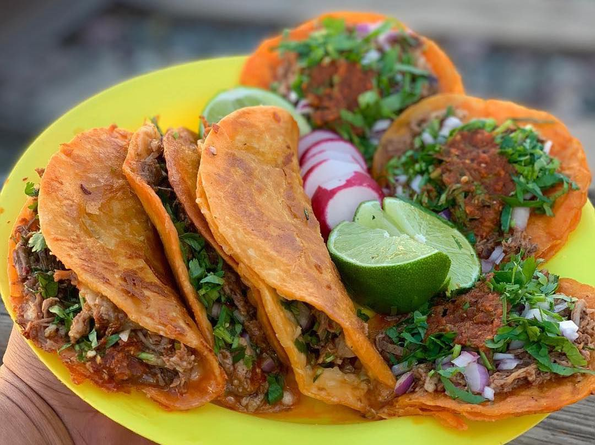

Tacos

Tacos are very delicious are have originated from Mexico
and one of the best times to eat them is during taco tuesday.
Ingredients
- tortillas
- meat choices (chicken, pork, chorizo, carne asada, etc)
Optional Ingredients
- Cilantro
- Onion
- Tomatoes
- any choice of vegetables
Steps to create
- First step is to cook your choice of meat with the seasoning you prefer
- Then once the meat is cook you want to cook the torillas with a bit of oil and try not to fry it
- Finally you are going to put the meat on the tortilla and add your choice of vegetables topping
Main Page